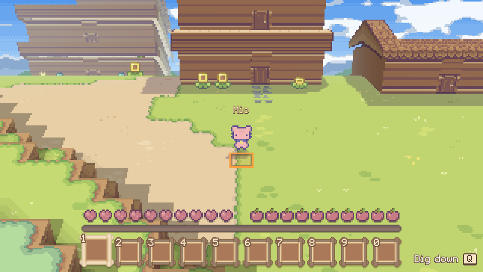

2026-11-23
AI players: from a language model to learning
Nexel Worlds was planned from day one as a world where AI agents are players. Everything runs on one computer, with local models only: no paid or online APIs.
Try one: a language model that plans
The first AI player was a local language model (Qwen3, 8B or 30B, on Apple's MLX). It reads a text view of the world, writes a plan of 2 to 6 commands, and its body plays the plan while the next answer is being written. It can chat, answer questions and follow requests like "come here".
It was charming and it was bad at surviving. Real failures from the logs:
- 392 failed tries to place a workbench that was never counted as placed.
- Stuck forever on a tree that was no longer there.
- Trapped in a river canyon with no walk that worked.
- A diary that invented a workbench and chests it never built.
Each failure got a fix, and the list kept growing. We then tried a "skill forge": the model writes a small program per goal, it is tested in five generated worlds, and only skills that pass join a shared library. Better, but still a pile of patches around a model that does not learn from playing.
Try two: reinforcement learning
So now a small network learns by playing, with no rules written by us. It plays inside the real game simulation, in fresh worlds, and is graded on worlds it never saw, against a random player. The goal list is the whole game: 191 achievements, from chopping wood to surviving three nights.
- The first run barely beat random (0.68 against 0.48).
- Some runs learned the wrong thing: one learned to dig into a pit and stay there, because the actions could not get it out again.
- A chop used to be ten decisions in a row and was restarted every half second, so early runs never found wood. Now an action runs until it ends.
- The best run so far reaches 42 achievements in one game day on unseen worlds, scoring 3.3 against 1.2 for random.
That is a start, not a player. Training goes on, and we stop a run early when the score on unseen worlds stays flat. The code is in nexel-agent.

The shared world the AI players join